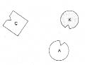
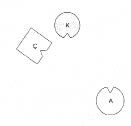
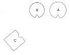
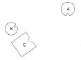

BAŞKA BİR KATILIMCI KADIN Baba saygı görmüş olsa bağımlılığın oluşmayacağını ya da ortadan kalkacağını söyledin. Bunu kendimle ilintilendirdim. Babam yoktu. Ben dört yaşındayken savaşta ölmüş. Ona çok saygı duyardım. Daha küçüklüğümden onu çok aramış olmalıyım. O ve ailesi mütevazı bir çevreden geliyor, annemin ailesince pek sayılmıyorlardı. Ne yapılabilir bu durumda?
HELLINGER Öncelikle içsel olarak babanın yanına geçilir, anneye küstah bir bakışla “O benim için senin kadar önemli. Senden aldığım gibi ondan da her şeyi alıyorum” denir. Ardından soyadı söylenir –babanın soyadının Schmitt olduğunu varsayalım- ve anneye “Ben bir Schmitt’im” denir. Eğer anne hayattaysa bu gerçekte de yerine getirilmelidir. Çok zordur. Azami cesaret ister.
Kadın erkek ilişkisi ve aile içinde sevgi düzeni, kural olarak kadının erkeği izlemesini gerektirir. Yani kadın erkeği ailesinde, farklı bir dil konuşuyorsa dilinde, kültüründe, hatta belki dininde izler. Bu, çocukların babayı ailesinde, kültürü, ülkesi, dili ve dininde izlemesine izin vermesi anlamına gelir. Bu olguya kanıt gösteremem. Bunun ataerkillikle filan ilgisi yok. Ama etkisi, birden gelen huzurda, böyle bir aileye bir anda gelen olumlu güçte görülüyor.
Bunun bildiğim tek istisnası, babanın ailesinin ağır alınyazılarının yükü altında olduğu bir durum. O zaman çocukların babanın etki alanından annenin etki alanına, babanın ailesinin etki alanından annenin ailesinin etki alanına geçmesi zorunlu.
Grup çalışmalarından birinde psikotik bir kadın hasta ile annesi vardı. Aileyi dizdiğimizde anne, “Çocuklarım yarım kan Arap, çünkü Suriyeli bir Arap’la evlendim” dedi. Ancak baba aileyle birlikte Almanya’da yaşamaktaydı. “Çocukların Suriyeli, bu senin için açık mı?” diye sordum. Kadın sorunla açıkça yüzleşmemişti. Sözgelimi kızının hangi dini benimsediğini bile bilmiyordu. Kızına sordum. “Müslüman’ım” dedi. Bu ailede anne daha önce bunu bilmek durumunda değildi.
Ardından tıpkı bir ailenin dizimini yapar gibi iki ülkeyi dizdik. Suriye’yi temsil eden adam, “Kendimi öyle verici hissediyorum ki” dedi. Anne, “Bu çok doğru” diye karşılık verdi. Almanya, dizimde onurlu bir yer aldı ama öncelik açıkça adamın kültürü, dili ve dinindeydi. Bu ortaya çıktığında ve kız da orada yerini alma olanağına kavuştuğunda çok mutlu oldu ve kendinin ve yerinin doğru olduğunu hissetti.
Söylediğim cümle bir ikincisiyle tamamlanmak zorunda; denge o zaman yerine oturur. Cümle şu: “Erkek dişiye hizmet etmelidir”. Kadının erkeği izlemesi, erkeğin de dişiye hizmet etmesi sevgi düzeninin gereğidir.
KATILIMCI Benim bir sorum daha olacak. Suriyeli Almanya’da yaşıyorsa da Suriyelidir, Suriyeli babadır. Suriye’ye gitmesi, karısının da onu izlemesi gerekmez mi?
HELLINGER Ben pek emin değilim.
BAŞKA BİR KATILIMCI Benim de bir sorum var. İncil’de, erkek anasıyla babasını terk ederek karısına bağlanır ifadesi yer alıyor. Yetiştiğim yerde, Westfalen’da şöyle söylenir; ailede oğul evlendiğinde ebeveyn bir oğul kaybeder, kız evlendiğinde ebeveyn bir damat kazanır. Senin söylediğin bunun tersi bir anlam mı taşıyor?
HELLINGER Böyle bir damat için ancak “vah gariban!” derdim.
Grupta gülüşmeler.
KATILIMCI KADIN Babanın Almanya’ya gelip kendi ülkesiymişçesine burada yaşadığı bir ailede ne yapmak gerek? Benim babam Çek ve hep burada yaşadı. Ailesini gerçekten terk etti, ölmeden önce annesini bir daha görmedi.
HELLINGER Çekçe biliyor musun?
KATILIMCI KADIN Hayır.
HELLINGER Öğrenmelisin! –Ana babası iki ayrı ülke kökenli olan çocukların iki vatanı vardır. Bu çok önemlidir. Bununla birlikte babanınki öncelik taşır, anneninki de büyük saygı görür.
KATILIMCI KADIN Açıklayamadığım bir şey yaşıyorum, ikiye bölünmüş gibiyim.
HELLINGER gruba Bir sınama yapalım ve az önce diğer vakada söylediklerimi bu kadının örneğinde sergileyelim.
HELLINGER Bu katılımcıya Şimdi Çek Cumhuriyeti için birisini, Almanya ve kendin için de birer kişi seç. Onları şu andaki durumuna göre diz.
1. Resim

Ç Çek Cumhuriyeti
A Almanya
K Kadın (=Danışan)
HELLINGER Çek Cumhuriyeti nasıl?
ÇEK CUMHURİYETİ Kötü. Burada değilim.
HELLINGER Almanya nasıl?
ALMANYA Tek bir kişi görüyorum; kadını.
HELLINGER Kadın nasıl?
KADIN İyi değil. Çek Cumhuriyeti’nin yokluğunu hissediyorum, Almanya’da gördüğüm şey ise hiç bana göre değil.
HELLINGER Çek Cumhuriyeti’ni çevirerek kadına sorar Çeşitli yerleri denediğinde nereye gitmek istiyorsun, kendini en iyi hissettiğin yer neresi?
KADIN Çek Cumhuriyeti’ne gitmek istiyorum.
2. Resim

HELLINGER Çek Cumhuriyeti şimdi nasıl?
ÇEK CUMHURİYETİ Daha iyi. Ama Almanya’ya doğru bir itki hissediyorum.
HELLINGER Almanya nasıl?
ALMANYA Ben bir şey kaybettim.
3. Resim

HELLINGER Danışana Dizimde kendi yerini almak ister misin? Birinden birine ne kadar yakın olmak istediğini kendin sınayabilirsin.
Danışan Çek Cumhuriyeti’nin hemen yanında durur ve güler.
4. Resim

HELLINGER gruba Pekâlâ, bir çocuğun kendisini iyi hissetmesi için babasını ülkesinde izlemesi gerektiğini gösterebildim mi?
Grupta gülüşmeler.
HELLINGER Tamam, bu kadar.
BAŞKA BİR KATILIMCI KADIN Bu konuda bir sorum var. Sizin görüşünüze göre benim oğlum bir İspanyol. Altı yaşında ve babasıyla hiçbir ilişkim yok. Onun için nasıl bir durum söz konusu?
HELLINGER Çocuğun İspanyol büyük ana babası var mı?
KATILIMCI Büyükbabası hayatta, evet.
HELLINGER Babanın da bir ailesi olduğu çoğu zaman unutulur.
KATILIMCI Ha, bir de amcası var.
Grupta gülüşmeler